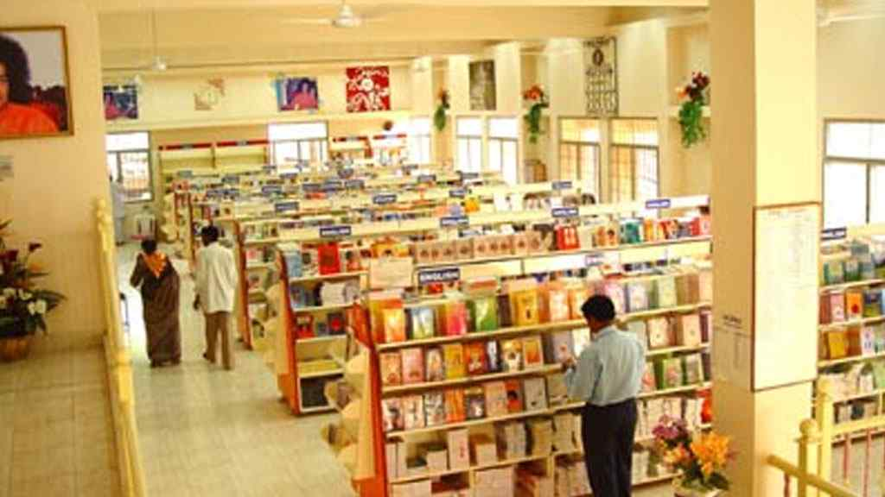

Daily Schedule (at Sai Kulwant Hall)
Bhagawan has laid down the daily schedule to be followed in the Ashram. Every activity of the Ashram routine is suffused with deep spiritual significance. See the table below for the Ashram schedule:
| Time |
Activity |
| 5.10 a.m. |
Aumkar, Meditation and Suprabhatham |
| 5.40 a.m. |
Veda Chanting and Nagar Sankeertan (Circumambulating the Mandir) |
| 6.30 a.m. - 07.30 a.m. |
Pooja inside the Bhajan Hall (Entry for Devotees will start at 06.25 a.m.) |
| 8.00 a.m. - 9.00 a.m. |
Veda Chanting |
| 9.00 a.m. - 9.30 a.m. |
Bhajans |
| 9.30 a.m. - 10.30 a.m. |
Darshan of Bhagawan’s Mahasamadhi and Prayer Hall |
| 4.30 p.m. - 5.15 p.m. |
Veda Chanting |
| 5.15 p.m. - 6.00 p.m. |
Bhajans |
| 6.00 p.m. - 7.00 p.m. |
Darshan of Bhagawan’s Mahasamadhi |
| 6.00 p.m. - 6.10 p.m |
Meditation for Overseas Devotees in Prayer Hall |
Extension of Darshan timings: In response to requests by devotees, an additional time slot has been introduced on Sundays to facilitate Darshan of Bhagawan’s Sannidhi. Starting from September 7, 2014 (Onam Day), on all Sundays, devotees will be allowed to have Darshan of Bhagawan’s Sannidhi from 4.30 p.m. to 5.00 p.m, in addition to the current Darshan Timings after Bhajans.
Late Evening Aarti: To bring the Sannidhi Darshan to a ceremonial close and enhance the spiritual experience for the devotees, an Aarti will be offered at Bhagawan’s Sannidhi on all days towards the close of Evening Darshan, from September 4, 2014 onwards. This will be in addition to the usual Aarti offered after Evening Bhajans. Devotees will not be permitted to approach the Sannidhi after the last Aarti for the day.
Kindly Note:
- Ladies and gents are seated separately in the hall with separate entrances for ladies and gents.
- Devotees are generally allowed to be seated inside the Sai Kulwant Hall around 7.45 a.m. for the morning session and around 4.15 p.m. for the afternoon session.
- The prayer sessions and darshan are open to all. There is no restriction on any basis whatsoever, be it religion, region, status, caste, etc.
- There is no amount collected from anybody for Darshan.
- Devotees are not permitted to carry along with them articles like books, bags, purses, mobile phones, cameras and other electronic goods etc. into the Darshan Hall during Darshan time. Devotees may however bring their Veda books to the hall.
Electronics articles such as cell phones, can be kept in the cloak room located close to the entrance to the hall. There is also a Luggage Cloak Room near South -1 A - 31.
Aumkar:
Aumkar is the chanting of ‘Aum’, the primordial sound, also called the ‘Pranava’. The vibrations that emanate from chanting ‘Aum’ have the potency to purify the inner personality of an individual as well as the surrounding environment. That is why the day at Prasanthi Nilayam begins with the chanting of 21 Aumkars.
Suprabhatham:
‘Su’ signifies good, auspicious and ‘Prabhath’ means morning. ‘Suprabhatham’ refers to the morning prayers that are chanted in praise of the Lord to awaken the divinity present within each individual. It is the act of dedicating oneself to the Lord and praying for His blessings right at the start of a new day. For the text and MP3 audio of the prayer, click here.
Veda Chanting:
Vedas are ancient spiritual scriptures revealed to great sages and seers while in communion with God. Chanting or listening to these hymns confers spiritual as well as physical benefits. That is why Bhagawan gives a lot of importance to Vedas and encourages everybody to chant these hymns and understand their meaning. The students of Bhagawan chant these hymns in the early hours of the morning while circumambulating the mandir complex, and also during Darshan hours in the morning and afternoon sessions in the mandir.
Nagar Sankeertan:
‘Nagar’ means city or locality and ‘Sankeertan’ means devotional singing. After Suprabhatam, devotees circumambulate the mandir complex while singing devotional songs and clapping their hands keeping beat. It charges the atmosphere with holy vibrations and one begins the day with the name of the Lord on one’s lips.
Bhajans:
Bhajans means “Singing aloud the glory of God”. Bhajans in the divine presence of Bhagawan Baba are unique as they are universal in their scope and appeal and emphasise the unity of faiths. For Bhajans MP3, click here.
Arati:
‘Arati’ is the ritual of waving lighted camphor to the deity to mark the culmination of worship. During Arati, devotees sing a devotional song in praise of the Lord and end with a prayer for universal peace. Arati MP3, click here.
Key Information about the Trust
Sri Sathya Sai Central Trust is a Public Charitable Trust registered under Section 12A of the Income Tax Act, 1961 for carrying out activities in the areas of:
- Relief to the Poor
- Medical Relief
- Education
- Other objects of General Public Utility
The Trust has been granted recognition under Section 10(23C)(iv) of the IT Act and Section 6(1) of the Foreign Contributions and Regulation Act, 1976. Contributions to the Trust enjoy exemption under Section 80G of the IT Act.
If you wish to make an online donation to Sri Sathya Sai Central Trust, you can do so using the SBI Collect service offered by State Bank of India. To directly go to the SBI Collect page and donate to the Trust, click on the following link :
https://www.onlinesbi.com/prelogin/icollecthome.htm?corpID=340857
You will be able to use the Debit cards, Credit cards and Internet Banking facility of other banks, although the service is being offered by State Bank of India.
You may find the guide below useful, to make a donation using SBI Collect.
How to donate to Sri Sathya Sai Central Trust using SBI Collect service of State Bank of India
To donate through other modes, see the following links for information.
1.) Indian Donors
2.) Overseas Donors
Travel
Prasanthi Nilayam Township is adjacent to the village of Puttaparthi, in Anantapur District of Andhra Pradesh, South India (Latitude 14° North, Longitude 78°1 East). It is well-connected by road, rail and air. Bangalore is the nearest metro at about 120 kilometres from the Ashram.
Road
A number of bus services connect Prasanthi Nilayam to cities like Bangalore, Hyderabad, Chennai, Vishakhapatnam and Tirupati.
The Prasanthi Nilayam bus terminal is located just opposite the Ashram. It has a fully computerised reservation counter of the Andhra Pradesh State Road Transport Corporation (APSRTC: http://www.apsrtconline.in/ ). [ Phone: (08555) 287210 ]
The Karnataka State Road Transport Corporation (KSRTC: http://ksrtc.in) too runs bus services connecting Prasanthi Nilayam to Bangalore (including a Volvo luxury bus service) and to Mangalore from this terminal. The KSRTC reservation counter is located close to the bus stand. [Phone: (08555) 288938 ]
Private Transport: There are a number of private bus and taxi operators who ply between Prasanthi Nilayam and cities like Bangalore, Chennai, etc. Please be advised that taxi fares between Bangalore and Prasanthi Nilayam are in the range of Rs. 2500/- to Rs. 3000/-.
Rail
The ‘Sri Sathya Sai Prasanthi Nilayam’ railway station is located 8 kilometres from the ashram. There is a computerised railway reservation counter in the bus terminal just outside the Ashram [ Phone: (08555) 287355 ].
 Railway Station - Sri Sathya Sai Prasanthi Nilayam (SSPN)
Railway Station - Sri Sathya Sai Prasanthi Nilayam (SSPN)
There is a direct rail connectivity from the major cities of New Delhi, Mumbai, Kolkata, Chennai, Bangalore, Hyderabad, Vishakapatnam, Vijaywada, Bhubneswar etc.
Several trains pass through Dharmavaram junction, located 40 Km. from Prasanthi Nilayam too.
For more information please check www.indianrail.gov.in.
Code for Prasanthi Nilayam station is SSPN.
Code for Dharmavaram Junction is DMM
Air
The nearest major airport is the Bengaluru International Airport (http://www.bengaluruairport.com) located about 120 kilometres from Prasanthi Nilayam.
Accommodation
 Accommodation
Accommodation
Advance booking of accommodation may be done online at http://www.prasanthinilayam.in/. This facility is presently for those seeking to book family accommodation.
For Citizens of India and Nepal (with valid Photo ID)
| Type of Accommodation |
Office Location |
Office Timings |
Tariff Rates (per head per day) |
| Dormitory |
Entrance to the Ashram |
5 a.m. – 9.00 p.m. |
- Rs. 5
- Rs. 10
- Rs. 20 (with bunker beds)
|
| Rooms (for families) |
Adjacent to North - 9 Block |
6.15 a.m – 8.00 p.m |
- Rs. 80 (semi furnished with Single Cot)
- Rs. 150 (Furnished with 2 cots)
- Rs. 200 (Furnished with 2 cots)
- Rs. 250 (Furnished with 2 cots - for Online Reservation Rooms)
|
- Valid Photo ID: Valid Passport, Driving License, Voter ID Card, PAN Card, Ration Card, Photo identity cards issued by Central/State Government for their employees, Nationalised Bank Passbook with photograph, Student Identity Card with photograph issued by recognized School / College for their students
- Nepali Citizens must necessarily carry their valid passports.
- Individuals are provided Dormitory accommodation.
For Overseas Devotees (with Passport and valid Visa) and Non-Resident Indians (with Indian Passport)
| Type of Accommodation |
Office Location |
Office Timings |
Tariff Rates (per head per day) |
| Dormitory |
Adjacent to North - 9 Block |
6.15 a.m – 8.00 pm |
- Rs. 30 (with cot for single ladies)
- Rs. 20 (with cot for single gents)
|
| Rooms (for families) |
Adjacent to North - 9 Block |
6.15 a.m – 8.00 pm |
- Rs. 200 (Furnished with 2 cots)
|
* An additional Rs. 30 is charged for rooms with Hot Water Facility.
- Foreign nationals holding Tourist Visas with multiple entry facility are required by law to ensure a gap of at least 2 months between consecutive visits to the country. Kindly visit http://www.immigrationindia.nic.in/ to be informed on the regulations to be complied with before visiting India.
- Overseas devotees are required to fill in a registration form to complete the registration process. This form is available at the registration office or it can be downloaded in advance. Large groups with more than 25 members are advised to keep the filled-in registration forms ready so as to save time. Click here to view / download this form.
- Individuals are provided Dormitory accommodation.
Advance reservations:
Advance booking of accomodation can be made by those seeking family accommodation at http://www.prasanthinilayam.in/. In case of those seeking to arrange accommodation for large groups it is advisable to contact the Accommodation Office well before the planned time of arrival (Email: enquiries@prasanthinilayam.in).
Payment:
All payments towards accommodation charges must be made in cash (in Indian rupees) only. There is a bank counter inside the Ashram premises where devotees can exchange their foreign currency for Indian rupees. Payment by cards are also being accepted.
Service of Porters:
Service of authorised porters at fixed tariffs is available for shifting of luggage at the time of arrival or departure.
Laundry service:
There are authorised dhobis (laundry personnel) who collect the laundry outside the building every morning after 7 a.m. The clothes are usually returned within a day or two.
Food
There are three canteens in the Ashram that cater to the varying tastes of the thousands who visit Prasanthi Nilayam from all over the world. They provide hygienically prepared vegetarian food at nominal prices.
South Indian Canteen
The South Indian Canteen offers South Indian style purely vegetarian meals, breakfast, snacks, tea, coffee, milk etc. at highly subsidized rates.
- It has separate dining sections for gents and ladies.
- Overseas devotees may find the food spicy. To them, the Western Canteen would be most convenient.
- Separate sections for ladies and gents
Timings:
| Breakfast |
6-30 a.m. to 8-30 a.m. |
| Lunch |
11-00 a.m. to 01-00 p.m. |
| Afternoon tea & snacks |
3-30 p.m. to 04-15 p.m. |
| Dinner |
6-30 p.m. to 08-30 p.m. |
Payment:
Payment in the canteen is in the form of canteen coupons only. Direct cash is not accepted. Canteen coupons can be purchased from the ‘Canteen Coupons’ counter located in front of the gents’ entrance of the Canteen.
North Indian Canteen
The North Indian Canteen in North Block of the ashram and serves purely vegetarian North Indian cuisine.
Timings:
| Lunch |
11.30 a.m. to 1.00 p.m. |
| Dinner |
6.30 p.m. to 8.00 p.m. |
| Breakfast and afternoon snacks/tea are not served in this canteen. |
Payment:
All payments in this canteen are made directly in cash.
Western Canteen
 Western Canteen
Western Canteen
The Western Canteen is located between Round Building 2 and Round Building 3 of the Ashram premises and offers purely vegetarian continental cuisine.
Timings:
| Breakfast |
08.00 a.m. to 09.00 a.m. & 09.30 a.m. to 10.30 a.m. |
| Lunch |
12.45 p.m. to 1.30 p.m. |
| Dinner |
07.00 p.m. to 8.30 p.m. |
| Afternoon snacks/tea are not served in this canteen. |
Payment:
All payments in this canteen are made directly in cash or through the cards.
Snacks Counters
Kiosks are located, one adjacent to the Shopping Centre and another near the North Indian Canteen, where snacks, beverages and ice-creams are served. Other than this there are beverage counters distributed all around the ashram where coffee, tea, hot chocolate etc are available.
Timings:
The timings of these shops are often staggered to ensure availability from 0500 Hrs to 2030 Hrs. However these Kiosks will stay closed during Programmes and Bhajan Sessions in the morning and evening.
Bakery
The Bakery is located behind South–6 block flanking the Shopping Center on the left side. One can find here all kinds of bakery items from bread & bun to pizzas, all prepared by dedicated Sevadal Volunteers inside the Ashram premises itself.
Timings:
| Morning |
09.30 a.m. to 11 a.m. |
| Afternoon |
3.30 p.m. to 5.15 p.m. |
A bakery counter is opened daily in South Indian Canteen between 7.30 a.m. to 8.30 a.m. and between 3.30 p.m. to 4.30 p.m.
Medical Care
General Hospital
 General Hospital Puttaparthi
General Hospital Puttaparthi
Sri Sathya Sai General Hospital is adjacent and South of the ashram premises. The hospital has outpatient facilities and also provides casualty/emergency services. The hospital provides free diagnosis and treatment in General Medicine, Paediatrics, Orthopaedics, ENT, Ophthalmology, Dentistry, Obstetrics and Gynaecology.
| Department |
Timings |
| Casualty / emergency |
Open 24 hours |
| Out
Patient |
Morning |
8.00 a.m. – 12.00 Noon |
| Afternoon |
2.00 p.m. – 4.00 p.m. |
Super Speciality Hospital
 SSSIHMS Puttaparthi
SSSIHMS Puttaparthi
The Super Speciality Hospital, also called as the Sri Sathya Sai Institute of Higher Medical Sciences, Prashanthi Gram, is located 7 kms from the Ashram. The hospital offers Specialty treatment in the departments of Cardiology, Urology, Ophthalmology, Orthopaedics, and Gastro-enterology completely free of charge. More…
Timings:
The hospital is open from 8.30 am to 5 pm on all days except Sundays and public holidays.
Sri Sathya Sai Sadhana Trust (Bhakta Sahayak Division)
Shopping Centre
 Shopping Center
Shopping Center
The Shopping Centre is adjacent to South-6 block, near the Sri Sathya Sai Sadhana Trust (Publications Division) building. Day-to-day needs of devotees ranging from stationery, grocery and home needs to clothing and travel goods are available at very reasonable prices.
Timings:
| Morning (Only for Ladies) |
9.30 a.m. to 12.00 Noon |
| Evening (Only for Gents) |
3.00 p.m. to 5.00 p.m. |
Fruits and Vegetables
The Fruits and Vegetables Stall is located contiguously to the south of the Shopping Centre.
Timings:
| Morning |
9.30 a.m. to 12.00 Noon |
| Evening |
3.00 p.m. to 5.00 p.m. |
Sri Sathya Sai Sadhana Trust (Publications Division)

Books, Audio & Video Stall
Books, Photographs, Audio & Video Stall
The Sri Sathya Sai Sadhana Trust (Publications Division) located behind South-6, near the Shopping Centre undertakes the printing, publishing and sale of various books, audio & video cassettes, CDs & DVDs etc. relating to the life and teachings of Bhagawan Sri Sathya Sai Baba, Bhajans and festivals at Prasanthi Nilayam. The Trust also undertakes the sale of publications in other Indian and Foreign languages.
Subscriptions to the Ashram Magazine, Sanathana Sarathi for the English and Telugu editions can also be made here or online at www.sanathanasarathi.org
 SSSBPT Building
SSSBPT Building
Timings:
| Morning |
9.30 a.m. to 12.00 Noon |
| Afternoon |
3.00 p.m. to 5.00 p.m. |
Library cum Reading Room
The Book Trust building also houses a reading room that is a storehouse of Sai Literature with a large and varied collection of books on the life and teachings of Bhagawan Baba and experiences of devotees, in many Indian and foreign languages.
Timings:
| Morning |
9.30 a.m. to 12.00 Noon |
| Afternoon |
3.00 p.m. to 5.00 p.m. |
For more information, please visit www.sssbpt.org
Sri Sathya Sai Sadhana Trust (Media Division)
Sai Blossoms
Sri Sathya Sai Sadhna Trust (Media Division) makes available books, audio and video products under the banner “Sai Blossoms’. These may be purchased from their stall in front of the Radio Sai Studio near West-8 block.
Timings:
| Morning |
9.30 a.m. to 12.00 Noon |
| Evening |
3.00 p.m. to 5.00 p.m. |
Sai Blossom products are also available at the Shopping Complex.
For more information, please visit www.radiosai.org
Banking Services
State Bank of India, Prasanthi Nilayam Branch is located at Room No. 5 opposite the South Indian canteen.
Timings:
| From Monday to Friday |
| Morning |
9 a.m. to 12 noon |
| Afternoon |
3 p.m. to 6 p.m. |
| On Saturdays/Sundays |
| Only Morning |
9 a.m. to 12 noon |
ATM Facility:
Canara Bank operates an ATM located near North Indian Canteen. A coin vending facility has also been provided in the ATM complex.

Other major banks with branches in Puttaparthi (outside ashram premises):
Canara Bank, Syndicate Bank, State Bank of Hyderabad, HDFC Bank, ICICI Bank and ING Vysya Bank. All these banks too provide ATM and Credit card/Debit card facilities.
Note:
Devotees are advised not to deal with any unauthorized persons for foreign exchange transactions as it is prohibited under Indian law.
Cloak Room
The men's cloakroom is located in Room A-12 of East Prasanthi Block.
The women's cloakroom is situated next to the ladies entrance of Sai Kulwanth Hall on the Northern Side.
- The Cloak Room accepts only electronics items.
- No charges are collected for the service.
Timings:
| Morning |
4.30 am to 10.30 am |
| Evening |
4.00 pm to 7.30 pm |
Telephone Booth
Inland and overseas telephone calls can be made from the telephone booths in the ground floor of the Sevadal Accommodation building located opposite the Round Block-5.
Timings:
6 a.m – 8.45 p.m.
Emergency / Security Office
This office is located adjacent to the South Indian Canteen, beside the Gopuram Gate of the Ashram and is open 24/7. Any issues concerning the security of the Ashram and the devotees are dealt with here. Ambulance service is available here, in case of emergencies. One may also collect Vibhuthi prasadam from here when leaving the Ashram.
Contact: +91-8555-286100
Maintenance Office
The Ashram Maintenance Office may be contacted for any civil, electrical, water supply problems or any other complaints concerning the room or hall allotted within the ashram. It is located adjacent to the West-3 block on the southern end.
Timings:
8 a.m. – 8 p.m.
Wheel Chair facility
Devotees in need of wheelchairs may obtain them at North-8, A-10 between 8 a.m. and 8 p.m. The accommodation office also allots ground floor rooms to such people on request, subject to availability. The wheelchairs are not supposed to be taken outside the Ashram premises and must be returned on the specified date
Safe Deposit Locker
A safe deposit locker is made available to overseas devotees at North-8, A-10 between 8 a.m. and 8 p.m. for storing valuables during their stay in the ashram.
Public Relations Office
The Public Relations Office is located in Room No. 10, opposite the South Indian Canteen. This office is open from 8.00 a.m. to 2.00 p.m. and 3.00 p.m. to 7.00 p.m. on all days. The ‘Lost-and-Found Office’ is also located here, where devotees can enquire about their lost belongings, or deposit any unclaimed articles found inside the Ashram. Any clarifications can be had by contacting the Public Relations Office at the Ashram.
Special shows at the Planetarium for school/college pupils or large groups above 120 in number may be arranged in advance by contacting the Public Relations Office.
Address:
Public Relations Office
Prasanthi Nilayam
Anantapur District
Pin Code – 515 134
Andhra Pradesh, INDIA
Phone: (0091) 8555-287390. (extn: 209)
E-mail: pro@sssct.org
Advisory Information
Dress Code
- Devotees are expected to dress modestly,
in clean and sober clothing, as befits a place of worship.
Generally, people in the Ashram dress in whites.
- Wearing of shorts or sleeveless shirts
is strictly prohibited. Women are required to dress to
their ankles. Tight-fitting or diaphanous dresses are
not permitted.
- Unorthodox hairstyles, over-matted hair, tall set hair
etc. or large obtrusive hats are highly discouraged.
Ashram Discipline
- Men and women are not expected to socialize and visit each other's rooms to indulge in idle talk or gossip inside the ashram. Indian customs and social behaviour are commonly observed inside the Ashram premises. Men and women indulging in physical contact or publicly expressing their greetings or affection are not approved of.
- The consumption or possession of tobacco / tobacco products, alcoholic drinks and non-vegetarian food / food stuffs (including eggs) is strictly prohibited. Gambling inside the premises is strictly forbidden.
- Feeding of dogs inside the Ashram premises is discouraged.
- Kindly observe silence, and when it is necessary to speak, please do so softly. Do not play music loudly.
- Lights-out time in the Ashram is 9.30 p.m., after which devotees are not encouraged to move about inside or outside the Ashram. The Ashram gates are also closed at 9.30 p.m.
Self-Professed Intermediaries
- Devotees are requested to be on their guard against strangers or newfound friends who claim association with Bhagawan or claim to have inner or special messages from Bhagawan. They are all spurious people.
- Devotees are also requested to exercise utmost caution in visiting quacks, ‘healers with special powers’ supposedly delegated by Bhagawan Baba or spurious people parading as agents of ‘holistic’ or Indian therapies.
Bhagawan has repeatedly made it clear in His discourses that He has no agents, no intermediaries, whatsoever. His connection with the devotees is direct and heart to heart.
Unauthorized Trusts / Bodies
No institution or individual other than the following are authorised to receive any donation inside the Ashram on any account:
- Sri Sathya Sai Central Trust
- Sri Sathya Sai Institue of Higher Learning
- Sri Sathya Sai Sadhana Trust
- Sri Sathya Sai Eswaramma Women’s Welfare Trust
Devotees are requested to note that the Trust does not solicit any donation through intermediaries or agents. Individuals, trusts and other bodies soliciting donations on behalf of Bhagawan or the above-mentioned trusts are doing so illegally. Individuals or Institutions making donations to such unauthorised bodies are doing so at their own risk, and the above-mentioned trusts are not responsible for their acts.
The Government of India has amended the schedule to the Emblems and Names (Prevention of Improper Use) Act 1950 to include the following as protected names and emblems under the said Act:
- Sri Sathya Sai Central Trust
- The following emblems
- Sri Sathya Sai
In view of the above, no person shall use or continue to use for the purpose of any trade, business, calling or profession or any patent, trademark or design the aforementioned protected names / emblems or any colourable imitation thereof without the previous written permission of the Central Government. Any person who contravenes the above is liable to be proceeded against and punished under the provisions of the law.
Any person who is using the aforementioned names and emblem in contravention of the provisions of the Act is hereby notified and required to cease and desist from using the said names/emblems with effect from: 22nd July 2004.
Devotees are also required to beware of touts who collect money inside the ashram for any of the ashram services. Devotees are not required to pay to anyone inside the Ashram except for services like accommodation, food, etc. at the respective offices and canteens.